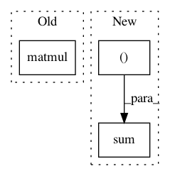

378c19e1422c00f91f7ce0e87de5b8f7d89799ed,gpytorch/lazy/kronecker_product_added_diag_lazy_tensor.py,KroneckerProductAddedDiagLazyTensor,inv_quad,#KroneckerProductAddedDiagLazyTensor#Any#Any#,55
Before Change
res = inv_mat.matmul(res)
res = q_matrix.matmul(res)
return tensor.t().matmul(res).squeeze()
After Change
res = q_matrix.transpose(-2, -1).matmul(tensor)
res2 = inv_mat_sqrt.matmul(res)
return res2.transpose(-2, -1).matmul(res2).sum((-1, -2))
In pattern: SUPERPATTERN
Frequency: 3
Non-data size: 3
Instances
Project Name: cornellius-gp/gpytorch
Commit Name: 378c19e1422c00f91f7ce0e87de5b8f7d89799ed
Time: 2020-06-28
Author: wjm363@nyu.edu
File Name: gpytorch/lazy/kronecker_product_added_diag_lazy_tensor.py
Class Name: KroneckerProductAddedDiagLazyTensor
Method Name: inv_quad
Project Name: geomstats/geomstats
Commit Name: 315990901cdcdca241013ee5e6c581391bae2523
Time: 2020-12-15
Author: yann.thanwerdas@gmail.com
File Name: geomstats/geometry/spd_matrices.py
Class Name: SPDMetricBuresWasserstein
Method Name: inner_product
Project Name: scikit-multiflow/scikit-multiflow
Commit Name: 99ab85ce23fc9ad7c7b04e2ca047f641120539e0
Time: 2018-09-07
Author: saulomastelini@gmail.com
File Name: src/skmultiflow/trees/multi_target_regression_hoeffding_tree.py
Class Name: LearningNodePerceptron
Method Name: update_weights